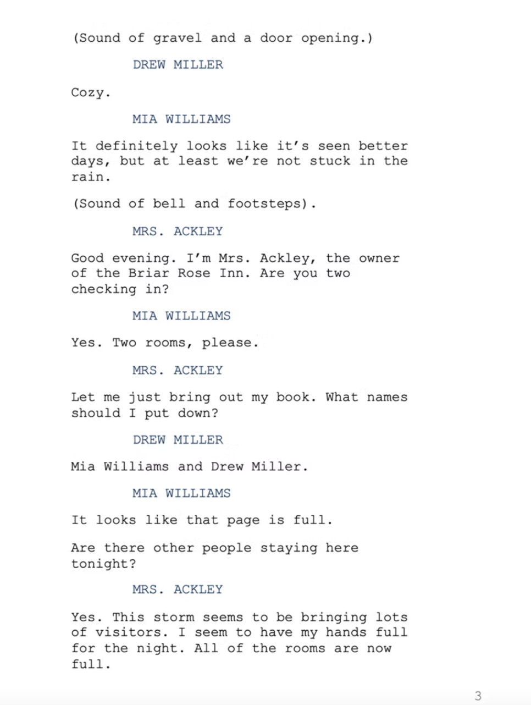
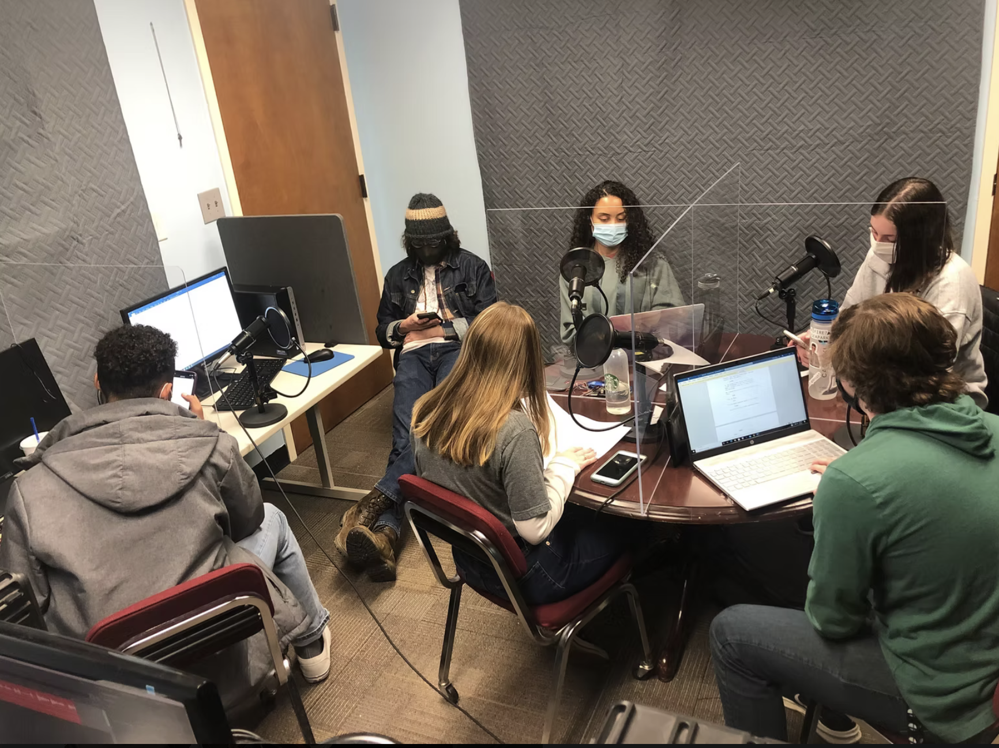

Listen to the First Episode of Season 3

— Video & Audio / Audio Theater Series
Martha's Mysteries, Viking Fusion's first fictional murder mystery podcast, was something that I started in 2020. It's last season was released in the Fall of 2022. I used Final Draft, Adobe Audition, and Adobe Premiere Pro to make it.
— How It Was Made
I wrote the scripts for each episode, one season at a time. A new season would release every semester. I edited the scripts after getting feedback, conducted auditions and cast the roles, and I set up the recording sessions.
I was the director for the show. I made sure that the recording sessions went smoothly and that the talent matched the vision of the characters.
I edited each episode in Adobe Premiere Pro and Audition. I added in sound effects to help add to the audio storytelling and create an atmosphere.
— Full Series
Walking Into Trouble
Death in the Sky
A Funeral to Remember
Murder at the Museum
Quiet on Set
— Outcomes
The series was popular to make into 5 seasons (one for each semester). The podcast was an Honorable Mention in the 2021 Pinnacle Award for Best Audio Talk/Entertainment Program.
— Behind the Scenes

